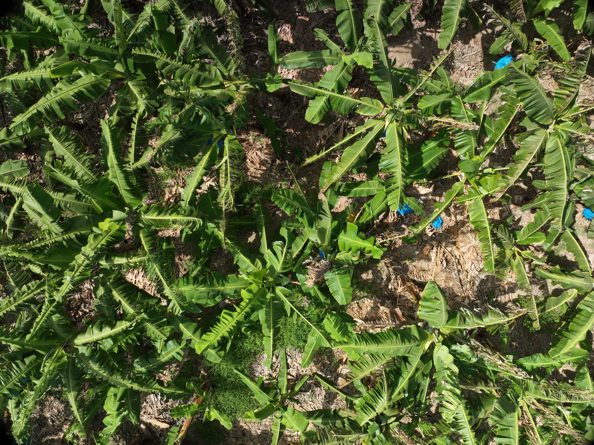
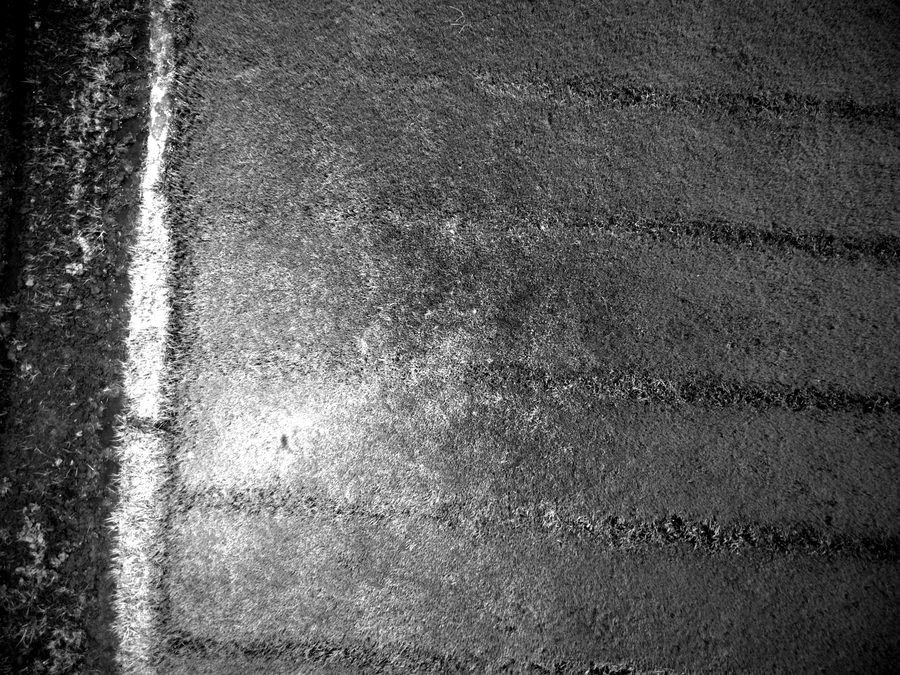
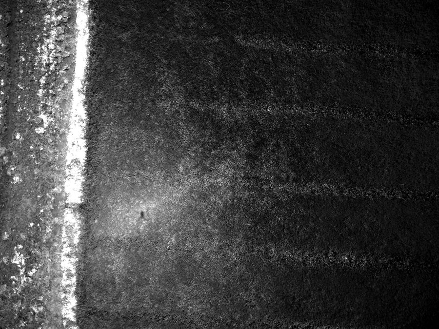
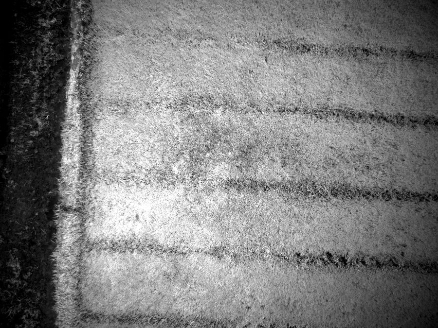
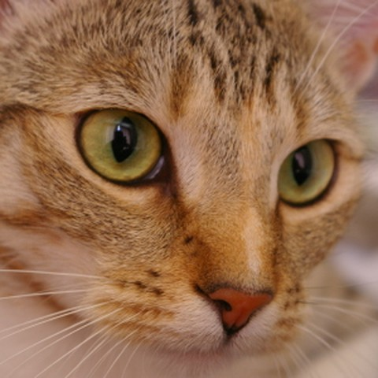
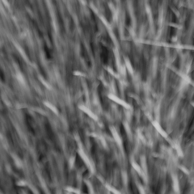
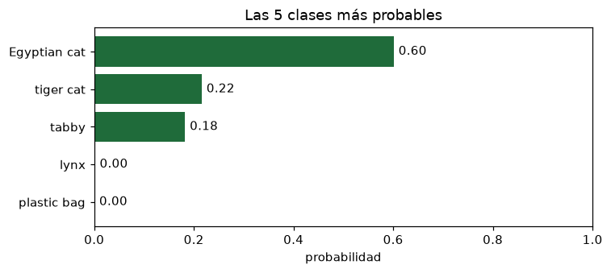
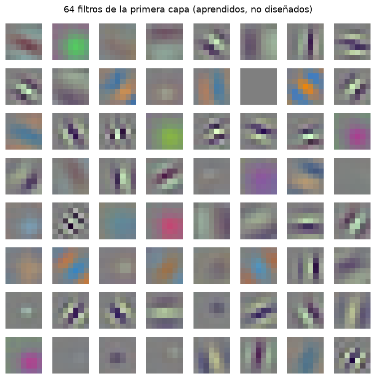
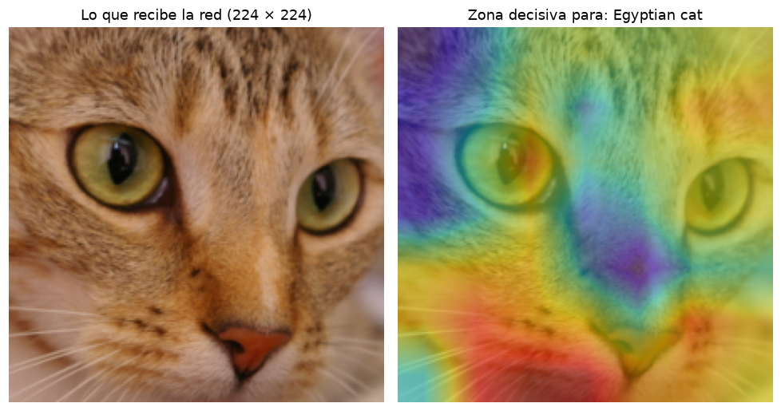
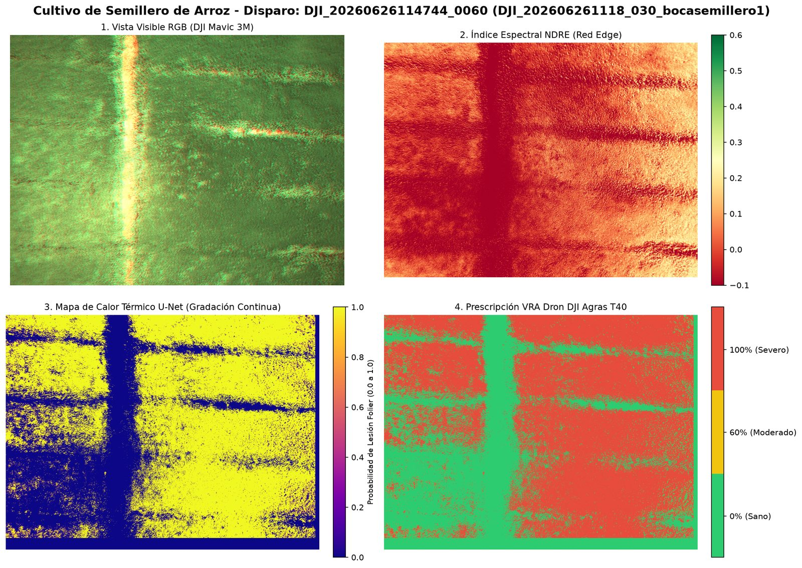

Ver la enfermedad antes que el ojo, y fumigar solo donde hace falta
El arroz y las musáceas (bananos) están entre los rubros más consumidos del país.
Las enfermedades foliares (piricularia, mancha parda, sigatoka) se detectan hoy recorriendo la finca, cuando el daño ya es visible.
Nuestra propuesta: un dron con cámara multiespectral toma las imágenes, una red neuronal marca las zonas afectadas y un dron fumigador aplica solo allí.
Equipo investigador
Mtro. Joel Abel Macea Selmo · investigador principal (matemática) PhD Rosalba Rodríguez · coinvestigadora (Especilista en Sanidad Vegetal y Docente F. Ciencias Agronómicas) Robert Muñoz Rivera · Doctorante en IA Marco Antonio Reyes · Asistentes de investigación
Equipo del proyecto en un arrozal de Mao.
El proyecto
Dos drones: uno que ve y uno que actúa
DJI Mavic 3 Multispectral. El que ve. Foto: ZLEA · CC BY-SA 4.0
Una cámara a color de 20 MP y cuatro cámaras de 5 MP, una por banda de luz.
Posicionamiento RTK: cada foto queda ubicada con precisión de centímetros.
DJI Agras. El que actúa. En la foto, un T50, de la misma serie que nuestro T40. Foto: Blervis · CC0
Nuestro Agras T40: dron fumigador con tanque de 40 litros.
Acepta un mapa de prescripción: cuánto producto aplicar en cada zona.
El proyecto
Visitas a: Mao, Bonao y San Francisco
Revisión de plántulas en campo.Arroz visto por el dron.Banano visto por el dron.

Plátano visto por el dron.
~24 GBde imágenes
5 imágenespor cada disparo del dron
El procesamiento empezó por el arroz; banano y plátano son la etapa siguiente.
El proyecto
¿Por qué multiespectral? Cada disparo produce cinco imágenes
Cada toma en blanco y negro mide cuánta luz de un solo color refleja el cultivo: claro = refleja mucho; oscuro = la absorbe.
Color (RGB) La foto normal: lo que ve el ojo.

Verde · 560 nm La planta refleja un poco: por eso la vemos verde.

Rojo · 650 nm La clorofila lo absorbe: planta sana, oscura.

Borde rojo · 730 nm El primero en cambiar cuando hay estrés.Infrarrojo · 860 nm Lo refleja la hoja sana por dentro: clara.
Una hoja sana refleja mucho infrarrojo y absorbe el rojo. Cuando se estresa, ese patrón cambia antes de que la hoja se vea amarilla.
El proyecto
Indices de vegetación
Con dos bandas se construye un índice de vegetación, un número entre −1 y 1 para cada píxel:
Definición. Una neurona artificial: recibe números, los combina con una suma ponderada y decide con una función de activación. La propuso Frank Rosenblatt en 1958.
La del perceptrón original. Su derivada es cero donde existe: el gradiente no indica cómo ajustar.
Sigmoide
$\sigma(x)=\dfrac{1}{1+e^{-x}}$
Aplasta cualquier número al intervalo (0, 1). Se lee como una probabilidad.
Tangente hiperbólica
$\tanh(x)=\dfrac{e^{x}-e^{-x}}{e^{x}+e^{-x}}$
Como la sigmoide, pero centrada en cero: va de −1 a 1.
ReLU
$\text{ReLU}(x)=\max(0,x)$
La más usada en redes convolucionales desde 2012: simple y rápida.
GELU
$\text{GELU}(x)=x\,\Phi(x)$
Una ReLU suavizada ($\Phi$ es la distribución normal acumulada). Es la habitual en los transformers.
Todas cumplen el mismo papel: romper la linealidad. Se les pide ser no lineales y, para poder entrenar con el gradiente, derivables en casi todo punto con derivada que no se anule siempre.
Contexto
De una neurona a una red profunda
Una capa son muchos perceptrones en paralelo: los pesos pasan de un vector a una matriz.
Aprender es encontrar todas las $W$ y $\mathbf{b}$. Una red convolucional es este mismo esquema, donde cada $W$ es un filtro pequeño que se repite por toda la imagen.
Contexto
Sabemos cómo aprende, pero no del todo cómo actúa cada neurona
“We have a very good idea of sort of roughly what it's doing. But as soon as it gets really complicated, we don't actually know what's going on any more than we know what's going on in your brain.”
«Tenemos una idea bastante buena de, a grandes rasgos, lo que está haciendo. Pero en cuanto se vuelve realmente complicado, no sabemos qué está pasando, igual que no sabemos qué pasa en tu cerebro.»
¿Quién es Geoffrey Hinton?
Científico británico-canadiense (1947), llamado el «padrino de la IA».
Premio Nobel de Física 2024, junto a John Hopfield, «por descubrimientos e invenciones fundamentales que permiten el aprendizaje automático con redes neuronales artificiales».
Su aporte premiado: la máquina de Boltzmann (1985), una red que aprende patrones por sí sola con ideas de la física estadística.
En 1986 popularizó la retropropagación (la regla de la cadena aplicada capa por capa, de la salida a la entrada, para derivar el error respecto a cada peso), el método con el que hoy se entrenan las redes.
Contexto
Caja blanca y caja negra
Caja blanca: el modelo se puede leer
Regresión lineal, árboles de decisión, reglas.
si NDRE < 0.20 → «estrés» si no → «sana»
Pocos números, y cada uno significa algo.
Una persona puede revisar por qué decidió así.
Límite: alguien tiene que escoger qué medir.
Caja negra: el modelo funciona, pero no se deja leer
Redes neuronales profundas.
25,557,032 números (una ResNet-50)
Aprende sola qué medir: bordes, texturas, formas.
Conocemos cada operación; no sabemos qué significa cada número.
Por eso existe un área entera dedicada a interpretarlas: la IA explicable (XAI).
Hoy abrimos la caja: la matemática de cada pieza sí se conoce. Lo difícil es entender qué aprendió el conjunto de maneral individual.
Contexto
Visión computarizada: tres preguntas sobre una imagen
Clasificación
¿Qué hay? Una etiqueta para toda la imagen: "gato", "perro"… o "hoja sana", "piricularia".
Detección
¿Qué hay y dónde? Un recuadro alrededor de cada objeto.
Segmentación
¿Qué es cada píxel? Un mapa del mismo tamaño que la imagen. Es lo que necesita el dron fumigador.
Hoy veremos la matemática de un clasificador. La segmentación usa exactamente las mismas piezas, repetidas para cada píxel.
La herramienta común a las tres tareas es la red neuronal convolucional (CNN, por sus siglas en inglés).
Contexto
Sesenta años enseñando a las máquinas a ver
1959Hubel y WieselNeuronas de la corteza visual que responden a bordes.
1980NeocognitrónPrimera red por capas inspirada en esa idea.
1998LeNet-5Lee dígitos escritos a mano en cheques.
2012AlexNetGana ImageNet con GPU. Empieza el auge.
2014VGG y GoogLeNetRedes mucho más profundas.
2015ResNet y U‑NetMás de 100 capas; segmentación precisa.
2020Vision TransformerLa imagen como secuencia de trozos.
2023Segment AnythingUn modelo que segmenta casi cualquier objeto.
En ámbar, los dos hitos que usamos hoy: la simulacion de Google COLAB corre una ResNet y el proyecto entrena una U-Net.
↓ ARTÍCULOS ORIGINALESPara profundizar
Los artículos detrás de cada hito
Año
Artículo
Aporte
Enlace
1998
LeCun et al. Gradient-based learning applied to document recognition
LeNet-5: convolución, submuestreo y entrenamiento por gradiente.
Hoy estudiamos la CNN porque es la que usa el proyecto: pocas imágenes etiquetadas y un equipo de campo pequeño. La matemática de fondo es la misma: productos de matrices, softmax y gradiente.
La matemática
El recorrido: de una foto a una decisión
Imagennúmeros en una rejilla
Convoluciónbuscar un patrón
ReLUquedarse con lo positivo
Poolingresumir
Softmaxconvertir en probabilidades
Pérdidamedir el error
Gradientecorregir
Toda la red es una función con millones de números ajustables. Entrenar es buscar los números que hacen pequeño el error.
Verde: lo que la red calcula (álgebra lineal).
Ámbar: cómo la red aprende (cálculo).
La matemática
Qué matemática hay dentro de una red neuronal
Área
Dónde interviene
Lo veremos en
Álgebra lineal
Una imagen es una matriz o un tensor. La convolución es un producto punto repetido.
Matriz, tensor, convolución
Cálculo
El gradiente dice cómo ajustar cada peso; la regla de la cadena lo lleva por todas las capas. El AUC es una integral.
Gradiente, regla de la cadena, AUC
Probabilidad y estadística
La salida es una distribución de probabilidad; el error se mide con entropía cruzada. Generalizar es un problema estadístico.
Softmax, entropía cruzada, curva ROC
Optimización
Entrenar es minimizar una función de millones de variables. Elegir hiperparámetros también, pero sin derivadas.
Descenso del gradiente, Adam, hiperparámetros
Geometría
Unir cientos de fotos en un mapa exige geometría proyectiva.
Ortomosaico
La matemática
Nuestro ejemplo: ¿cómo sabe una máquina que esto es un gato?

Foto de dominio público (ejemplo «Chelsea» de scikit-image). Es la misma que clasifica la demostración.
Para nosotros es inmediato. Para la computadora esta foto son 270,000 números, y ninguno dice «gato».
300 × 300 píxeles × 3 colores (rojo, verde y azul) = 270,000. En grises serían 90,000.
No se puede escribir la regla a mano: «orejas en punta, bigotes, ojos rasgados» no es una fórmula.
La red la aprende a partir de miles de fotos ya etiquetadas.
Seguiremos esta foto por cada pieza de la red, y al final volveremos al arroz: allí la pregunta no es «¿gato o perro?», sino «¿sana o enferma?», y la matemática es la misma.
La matemática · 1
Una imagen en grises es una matriz
El gato, en grises: 300 × 300 píxeles (90,000 números).La misma foto reducida a 12 × 12 píxeles (144 números).Lo que recibe la computadora: 0 = negro, 255 = blanco.
$A\in\{0,\dots,255\}^{12\times 12}$ · pasa el cursor sobre un píxel para ver su número
La reducimos a 12 × 12 solo para poder leer la matriz. La red usa la foto completa (224 × 224 en la demostración).
↓ CON UNA HOJA DE ARROZPara estudiar en casa
La misma idea con una hoja de arroz

Recorte de hojas de arroz tomado por el dron, en grises.El mismo recorte reducido a 12 × 12 píxeles.Lo que recibe la computadora.
Gato u hoja, para la red es lo mismo: una rejilla de números. En «Convolución en acción» puedes cambiar entre las dos imágenes.
La matemática · 2
Una imagen a color son tres matrices: rojo, verde y azul
El gato, a color: 300 × 300 píxeles.Reducido a 12 × 12 para poder verlo.
=
Canal rojo (R)Canal verde (G)Canal azul (B)
Cada píxel ya no es un número, sino tres: cuánto rojo, cuánto verde y cuánto azul. Mezclados dan el color que vemos.
La matemática · 2
Tensor: de un número a una pila de matrices
Escalarorden 0$a\in\mathbb{R}$un píxel en grises
Vectororden 1$\mathbf{v}\in\mathbb{R}^{n}$una fila de píxeles
Matrizorden 2$A\in\mathbb{R}^{m\times n}$una imagen en grises
Tensororden 3$X\in\mathbb{R}^{c\times m\times n}$una imagen a color
Matriz
Una matriz real de $m\times n$ es un arreglo de números con dos índices:
Equivalentemente, un elemento de $V^{\otimes p}\otimes (V^{*})^{\otimes q}$. Fijada una base $\{e_i\}$ de $V$, con $n=\dim V$, queda determinado por sus $n^{\,p+q}$ componentes $T^{\,i_1\dots i_p}_{\,j_1\dots j_q}$, que se transforman de modo prescrito al cambiar de base.
En aprendizaje profundo
Se llama tensor al arreglo de números con varios índices, es decir, a las componentes en una base ya fijada:
Una imagen a color es un elemento de ese producto tensorial escrito en la base canónica. En la práctica solo interesa su forma; nunca se cambia de base, así que la ley de transformación no interviene.
Las dos definiciones se conectan así: el arreglo de la lámina anterior son las componentes de un tensor abstracto una vez fijada una base.
La matemática · 2
Una imagen a color es un tensor: varias matrices apiladas
Foto normal: 3 canales
$X\in\mathbb{R}^{3\times H\times W}$
Nuestro dron: 4 canales
Verde
Rojo
Borde rojo
Infrarrojo
$X\in\mathbb{R}^{4\times 224\times 224}$
La matemática · 3
Convolución: un promedio ponderado que se desliza
En matemática
Combinar dos funciones deslizando una sobre la otra:
$y=1$ si era gato, $y=0$ si era perro. La foto en realidad era un:
Gato
Perro
Así decide la U-Net del proyecto en cada píxel: una sigmoide da la probabilidad de «estrés» y la pérdida binaria mide el error.
La matemática · 8
Más de dos clases: softmax y pérdida
Softmax (multiclase)
$$p_k=\frac{e^{z_k}}{\sum_j e^{z_j}}$$
Con dos clases, esta fórmula vuelve a ser la sigmoide (↓ deducción).
ClasePuntaje zProbabilidadGato2.0
0.66Perro1.0
0.24Conejo0.1
0.10
Mueve los puntajes: las probabilidades siguen siendo positivas y siguen sumando 1. En el proyecto las clases serían «hoja sana», «piricularia» y «mancha parda».
Pérdida: entropía cruzada
$$L=-\ln\big(p_{\text{clase correcta}}\big)$$
El animal de la foto en realidad era un:
L = -ln(0.66) = 0.42 Error pequeño
La pérdida resume en un solo número qué tan equivocada está la red. Ese número es lo que vamos a minimizar.
Basta dividir numerador y denominador por $e^{z_{\text{gato}}}$.
Solo importa la diferencia de puntajes: sumar la misma constante a todos no cambia las probabilidades. Por eso con dos clases alcanza un solo puntaje $z=z_{\text{gato}}-z_{\text{perro}}$.
La entropía cruzada de la softmax, $-\ln p_{\text{clase correcta}}$, se convierte en la entropía cruzada binaria de la lámina de la sigmoide.
La matemática · 9
Descenso del gradiente: bajar la cuesta paso a paso
Es calcular ese producto de atrás hacia adelante, reutilizando los factores comunes. Así el costo de obtener todas las derivadas es parecido al de evaluar la red una vez.
La derivada de ReLU es 0 o 1, y la de una convolución es otra convolución: por eso todo esto es rápido en una GPU.
$g_t$ es el gradiente en el paso $t$. Valores habituales: $\beta_1=0.9,\ \beta_2=0.999,\ \varepsilon=10^{-8}$.
$m_t$, el momento: promedio de los gradientes recientes. Suaviza el camino y no se deja frenar por un gradiente aislado.
$v_t$, la escala: promedio de los gradientes al cuadrado. Si un peso tiene gradientes grandes, su paso se achica; si son pequeños, se agranda.
Corrección de sesgo: como $m$ y $v$ arrancan en cero, al principio se dividen para no subestimarlos.
Resultado: cada peso tiene su propio tamaño de paso, que se ajusta solo. Por eso es el optimizador más usado para entrenar redes.
Kingma y Ba, Adam: a method for stochastic optimization, 2014. arXiv:1412.6980
Simulación
Simulación de una CNN: una red pequeña leyendo un dígito
Dibujas un número del 0 al 9 y ves cómo cada capa de la red lo transforma hasta dar la respuesta. Reconocer dígitos escritos a mano es el ejemplo clásico con el que nacieron las redes convolucionales.
CNN Explorer, de moralesangel. Interfaz en inglés; necesita conexión.
Base de datos: MNIST · 70,000 imágenes de 28 × 28
EntrenamientoPrueba
60,000 para entrenar (85.7 %) · 10,000 para prueba (14.3 %)
Validación: no aparta un grupo propio; usa el de prueba.
En la aplicación
Qué se ve
Lo vimos en
Dibujar un dígito
La entrada: 28 × 28 números.
Imagen = matriz
Replay forward pass
La señal avanzando capa por capa.
Apilar las piezas
Clic en un cubo de Conv 1
El filtro deslizándose sobre la imagen.
Convolución a mano
Pestaña Kernels
Los filtros que la red aprendió.
Convolución en acción
Barras de Output
Diez probabilidades que suman 1.
Softmax
Pestaña Train
La red aprendiendo desde cero.
Descenso del gradiente
Esta red tiene 52,266 parámetros y acierta el 98.9 % de los dígitos. La siguiente demostración usa una con 25 millones.
Simulación
Pruébalo: un clasificador real en tu navegador
Abrir el cuaderno de Google Colab.
Ejecutar las celdas en orden.
Subir cualquier foto.
Ver las 5 clases más probables, los filtros que la red aprendió y la zona de la foto en la que se fijó.
El modelo es una ResNet-50 entrenada con ImageNet: reconoce 1,000 categorías cotidianas (animales, objetos, alimentos). No conoce enfermedades del arroz; para eso hay que entrenarla con nuestras imágenes.
↓ CAPTURAS DE RESPALDOSimulación · respaldo
Lo que muestra el cuaderno, con una foto de ejemplo

Softmax. Las 5 clases más probables para la foto de un gato.

Filtros aprendidos. Primera capa: bordes en varias direcciones y contrastes de color.

Gradiente. En rojo, la zona que más pesó en la decisión.
De vuelta al proyecto
U-Net: clasificar cada píxel
Baja como un clasificador: convolución, ReLU y pooling.
Sube de nuevo hasta el tamaño original.
En cada píxel de la salida hay una probabilidad: ya no «¿gato o perro?», sino «¿sana o estresada?», repetido 224 × 224 veces.
No hay matemática nueva: son las mismas piezas en forma de U.
↓ CÓMO SE MIDEPara profundizar
Cómo se mide una segmentación: Dice e IoU
Sea $P$ el conjunto de píxeles que la red marca y $G$ el conjunto marcado en la etiqueta:
La curva se traza moviendo el umbral de decisión. El área bajo ella es la probabilidad de que el modelo puntúe más alto un caso positivo que uno negativo, ambos elegidos al azar: 0.5 es azar; 1, perfecto.
De vuelta al proyecto
Del píxel a la parcela: ortomosaico y mapa de fumigación
Fotos sueltascientos por vuelo
Ortomosaicouna sola imagen con coordenadas
U-Netprobabilidad por píxel
Prescripcióndosis 0 %, 60 % o 100 %
Agras T40aplica por zona

Prototipo del flujo sobre un disparo del semillero de arroz. Los umbrales de dosis aún no están calibrados con diagnóstico de campo.
El ortomosaico une las fotos corrigiendo la perspectiva, de modo que cada píxel corresponde a un punto del terreno con latitud y longitud.
Sin él tendríamos predicciones sobre fotos; con él tenemos un mapa que el dron fumigador puede seguir.
Meta: aplicar producto solo donde hace falta.
Cierre
Lo que nos llevamos
Tensor
Una imagen es una pila de matrices de números: 3 canales en una foto, 4 en nuestro dron.
Convolución
Un filtro que se desliza busca un patrón. La red no recibe los filtros: los aprende.
ReLU y pooling
Rompen la linealidad y resumen, para apilar capas y pasar de bordes a objetos.
Pérdida y gradiente
La pérdida mide el error en un solo número; el gradiente dice cómo cambiar cada peso para reducirlo.